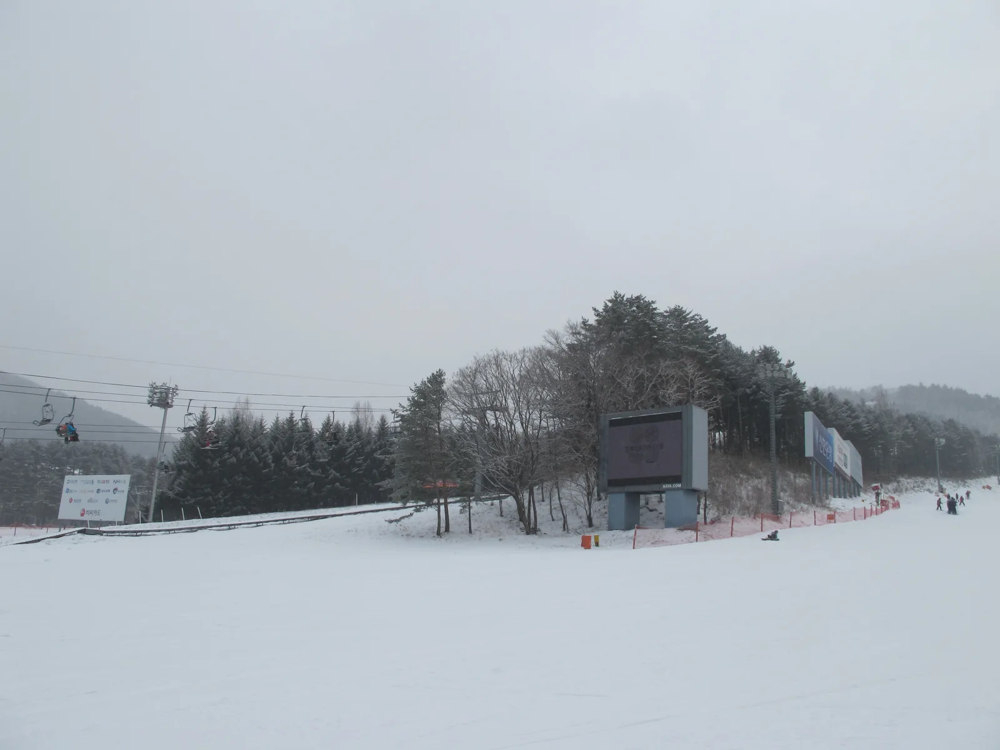
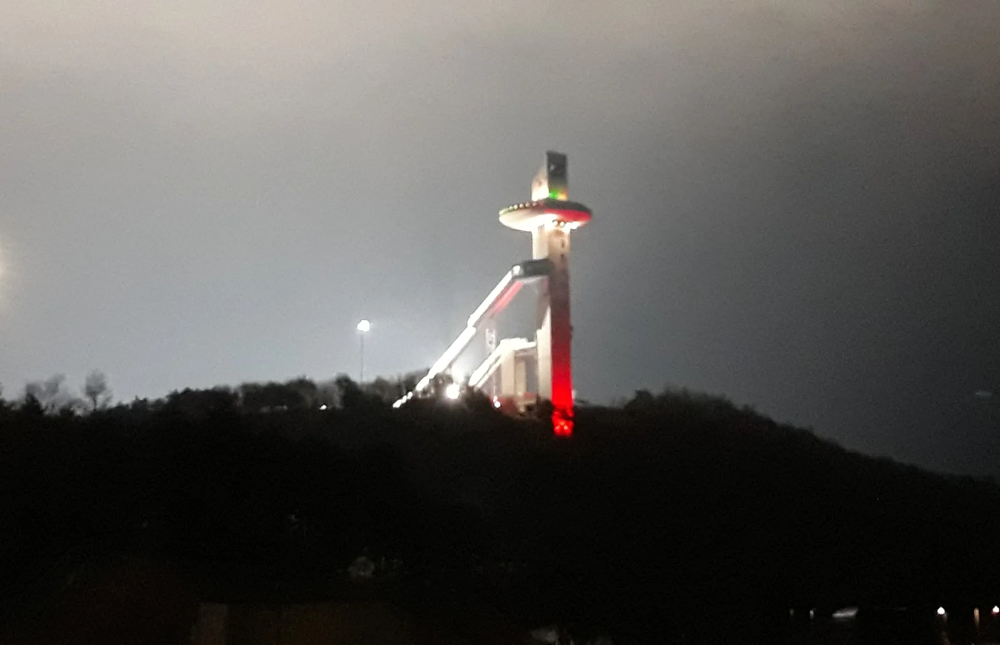
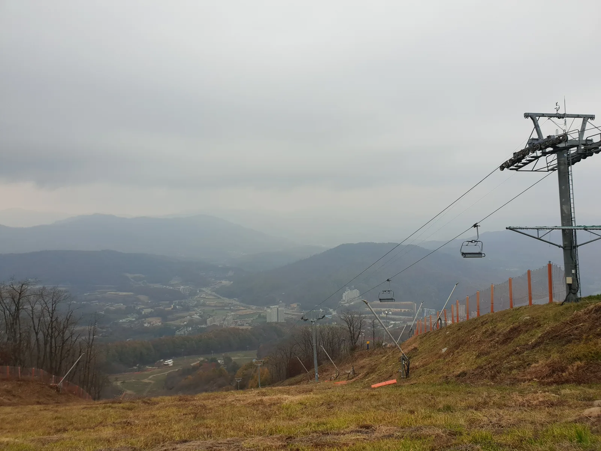

▲ 용평리조트 스키 슬로프. 국내 최초의 스키 리조트로 매년 11월 말~12월 초 개장한다
매년 9월이면 스키장보다 시즌권이 먼저 움직인다. 전국 스키장을 묶어 쓸 수 있는 통합 시즌권 'X6+'는 이미 9월 9일 얼리버드 특가 판매를 시작했는데, 정작 개별 스키장의 2026-2027 시즌 개장일과 정식 시즌권 가격은 이 기사 작성 시점(9월 17일)까지 대부분 공개되지 않았다. 지난 시즌(2025-2026) 실제 개장일과 가격을 기준으로, 지금 확인된 것과 아직 나오지 않은 것을 구분해 정리했다.
1. 왜 9월에 스키장을 챙겨봐야 하나
국내 스키 리조트들은 실제 개장 2~3개월 전부터 시즌권을 먼저 판매한다. 개장 시점의 날씨·설질과 무관하게 얼리버드 할인 폭이 가장 크기 때문에, 스키를 자주 타는 사람일수록 개장 공지보다 시즌권 판매 공지를 먼저 확인하는 편이다. 2026-2027 시즌 역시 통합 시즌권 판매는 9월 초에 시작됐지만, 개별 리조트의 개장일과 정식 가격표는 통상 10월 말~11월 초에나 공개된다.
2. 전국 주요 스키장, 예년 개장일은 언제였나

▲ 용평리조트 슬로프. 국내 최초 스키 리조트로 예년 기준 11월 말~12월 초 개장한다 ⓒ Wikimedia Commons
2026-2027 시즌 개장일은 아직 어느 스키장도 공식 확정하지 않았다. 다만 지난 2025-2026 시즌 실제 개장일을 참고하면 대략적인 시기를 가늠할 수 있다. 비발디파크는 2025년 11월 27일(목), 하이원리조트는 2025년 11월 28일(금)에 개장했고, 휘닉스평창은 2025년 11월 29일경 시즌을 시작한 것으로 파악된다. 용평리조트는 시즌권 이용 기간 자체를 매년 11월 1일부터 이듬해 6월 30일로 정해두고 있지만, 실제 슬로프 개장은 인공제설 작업을 거쳐 통상 11월 말~12월 초에 이뤄진다.
| 스키장 | 2025-2026 시즌 개장일 | 비고 |
|---|---|---|
| 비발디파크(홍천) | 2025년 11월 27일 | 폐장은 통상 이듬해 3월 초 |
| 하이원리조트(정선) | 2025년 11월 28일 | 고지대 위치로 개장이 빠른 편 |
| 휘닉스평창 | 2025년 11월 29일경 | 평창 동계올림픽 경기장 슬로프 보유 |
| 용평리조트(평창) | 11월 말~12월 초(통상) | 시즌권 이용기간은 11/1~익년 6/30로 설정 |
| 웰리힐리파크(홍천) | 11월 말경(통상) | X6+ 시즌권 참여 스키장 |
| 엘리시안강촌(춘천) | 11월 말~12월 초(통상) | X6+ 시즌권 참여 스키장 |
2026-2027 시즌 개장일은 11월 기상 상황(첫눈·기온)에 따라 며칠씩 앞뒤로 조정되는 경우가 많다. 방문 계획을 확정 짓기 전 각 리조트 공식 홈페이지의 '운영일정' 페이지를 확인하는 게 가장 정확하다.
모나용평 스키장 운영일정에서 확인 가능3. 통합 시즌권 X6+ — 알펜시아 신규 편입, 가격은 아직 비공개

▲ 평창 알펜시아 리조트. 2026-2027 시즌부터 통합 시즌권 X6+에 새롭게 편입됐다 ⓒ Wikimedia Commons
전국 스키장을 묶어 쓸 수 있는 통합 시즌권은 그동안 'X5+'라는 이름으로 모나용평·하이원리조트·지산리조트·웰리힐리파크·엘리시안강촌 5곳을 커버해왔다. 2026-2027 시즌부터는 평창 알펜시아가 새롭게 합류하면서 'X6+'로 확대됐다. 9월 9일 오전 11시 특가 판매가 시작됐지만, 이 기사 작성 시점 기준 정식 가격은 아직 공식 공개되지 않았다.
참고로 지난 2025-2026 시즌 X5+ 1차 판매 가격은 성인권 54만9,000원, 청소년권 34만9,000원이었으며, 직계가족 19세 이하 자녀 1명에게는 발급비 5만원만 받고 시즌권을 추가 제공하는 혜택도 있었다. 다만 올해는 알펜시아가 추가되고 판매 채널·구성이 달라진 만큼, 지난해 가격과 단순 비교는 어렵다는 게 관련 업계의 설명이다.
4. 개별 리조트 조기예매 — 시기를 놓치면 할인폭이 줄어든다

▲ 휘닉스평창 리프트. 2018 평창 동계올림픽 경기장 슬로프를 갖추고 있어 인기가 높다 ⓒ Wikimedia Commons
지난 시즌 사례를 보면 비발디파크는 8월 말~9월 초 얼리버드 할인 기간에 최대 20%, 조건에 따라 최대 30%까지 할인된 가격으로 시즌권을 구매할 수 있었고, 시즌권 자체는 10월 초부터 온라인몰에서 정식 판매를 시작했다. 시즌권 소지자에게는 리프트 45%, 리렌탈 패키지 55% 등 부가 할인 혜택도 주어졌다.
엘리시안강촌 역시 9월 초(작년 기준 9월 9일~25일)에 통합 시즌권 1차 판매를 진행했다. 얼리버드 할인은 통상 판매 시작일에 가까울수록, 그리고 여름이 끝나기 전에 구매할수록 할인 폭이 크다는 게 공통된 패턴이다. 올해도 각 스키장·통합 시즌권 모두 9~10월 초가 가장 저렴하게 구매할 수 있는 구간이 될 가능성이 높다.
▲ 정선 하이원리조트. 고지대에 위치해 개장이 비교적 빠른 편이다 ⓒ Wikimedia Commons
5. 2026-2027 시즌 전망 — 확정 발표 전 유의할 점
정리하면, 2026-2027 시즌은 통합 시즌권 판매만 먼저 시작됐을 뿐 개별 스키장의 개장일·정가·리프트권 가격은 모두 미발표 상태다. 지난 시즌 사례로 미뤄보면 11월 말~12월 초 사이 순차 개장이 예상되지만, 실제로는 기온과 인공눈 준비 상황에 따라 조정될 수 있다. 특히 처음 통합 시즌권에 합류한 알펜시아의 경우 운영 조건이 기존 5개 스키장과 다를 수 있어, 구매 전 이용약관을 꼼꼼히 확인하는 게 좋다.
| 항목 | 상태 | 내용 |
|---|---|---|
| X6+ 얼리버드 판매 시작 | 확정 | 9월 9일 오전 11시 시작 |
| X6+ 참여 스키장 | 확정 | 용평·하이원·지산·웰리힐리·엘리시안강촌·알펜시아(신규) |
| X6+ 정식 가격 | 미발표 | 지난 시즌(X5+) 참고가만 존재(성인 54만9천원) |
| 개별 스키장 개장일 | 미발표 | 지난 시즌 개장일(11월 말~12월 초)로 유추 가능 |
| 개별 리프트권 정가 | 미발표 | 통상 10월 말~11월 공개 |
✅ 2026-2027 스키 시즌 준비 체크리스트
· 통합 시즌권 X6+는 9월 9일부터 얼리버드 판매 시작, 알펜시아가 신규 편입
· 정식 가격·개별 스키장 개장일은 이 기사 작성 시점 기준 미발표, 지난 시즌 자료로만 유추 가능
· 지난 시즌 개장일 참고: 비발디파크 11/27, 하이원 11/28, 휘닉스평창 11/29경(모두 25/26 시즌)
· 얼리버드 할인은 통상 8월 말~10월 초가 가장 유리
· 확정 개장일·가격은 각 리조트 공식 홈페이지 공지를 통해 반드시 재확인할 것